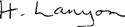

9
Listen to Part 1:

Câu chuyện của Tiến sĩ Lanyon
Tối hôm đó, Utterson ngồi một mình trong nhà. Cảnh sát đã mang xác của Edward Hyde khỏi nhà Tiến sĩ Jekyll. Bây giờ họ đang tìm chính Tiến sĩ Henry Jekyll. Không ai trong số những người hầu của ông ta nhìn thấy ông ta trong cả tuần.
Utterson có hai tài liệu cần đọc. Một cái trong phong bì của Tiến sĩ Jekyll. Cái còn lại là của Tiến sĩ Lanyon.
Ông lấy phong bì của Tiến sĩ Lanyon từ két sắt. Trên đó có ghi: Đọc cái này sau khi Tiến sĩ Henry Jekyll qua đời. Utterson nghĩ rằng Henry Jekyll đã chết. Vậy nên ông mở phong bì của Tiến sĩ Lanyon ra và đọc tài liệu.
Quảng trường Cavendish
London
Ngày 10 tháng 1 năm 1886
Utterson
Tôi đã rất sốc. Ông sẽ không tin tôi đâu, nhưng tôi sẽ viết lại chuyện này. Hôm qua tôi nhận được một lá thư kỳ lạ từ Tiến sĩ Jekyll. Đây là những gì ông ấy viết:
Lanyon thân mến
Ông là người bạn thân nhất của tôi. Tôi biết chúng ta đã bất đồng quan điểm trong quá khứ nhưng tôi cầu xin ông hãy giúp tôi bây giờ. Tôi không thể tự đến phòng thí nghiệm của mình. Xin đừng hỏi tôi tại sao. Tôi cần một loại hóa chất cho công trình khoa học của mình và tôi cần rất gấp.
Listen to Part 2:
Xin hãy đến nhà tôi. Poole, người hầu của tôi sẽ mở phòng thí nghiệm cho ông. Hãy tìm trong tủ thuốc của tôi trên tường. Tìm trong ngăn kéo có đánh dấu 'E'. Bên trong ngăn kéo đó có một lọ thủy tinh chứa đầy bột trắng. Xin hãy mang lọ này về nhà ông. Một người đưa tin sẽ đến lấy lọ vào lúc nửa đêm. Xin hãy giúp tôi.
Bạn của ông Henry Jekyll
Tôi đọc lá thư hai lần. Tôi không biết phải nghĩ gì. Jekyll có bị điên không? Tại sao ông ta không thể đến nhà mình?
Tôi đã làm theo những gì ông ấy yêu cầu. Tôi đến nhà ông ấy và đưa lá thư cho Poole xem. Sau đó chúng tôi cùng nhau đến phòng thí nghiệm. Bên trong phòng thí nghiệm, tôi tìm thấy ngăn kéo có đánh dấu 'E' và lấy ra lọ bột trắng. Sau đó, tôi trở về Quảng trường Cavendish và đợi người đưa tin của Jekyll.
Vào nửa đêm, một người đàn ông nhỏ bé đến gõ cửa. Ông ta là một người đàn ông kỳ lạ. Quần áo của ông ta quá rộng so với người và ông ta nói chuyện rất nhỏ nhẹ.
'"Ông có phải người của Tiến sĩ Jekyll không?" Tôi hỏi.
'"Đúng vậy. Ông có nó không?" người đàn ông hỏi. '"Ông có loại hóa chất mà Jekyll muốn không? Nó ở đâu?"
Tôi không muốn mời người đàn ông vào nhà mình. Nhưng tôi nói, '"Vào đi".
'"Nó ở đâu?" người đàn ông nhỏ bé hỏi lại.
'"Trên bàn đằng kia," tôi nói. '"Cầm lấy".
Listen to Part 3:
Người đàn ông cầm lấy lọ bột trắng và thở dài. Ông ta nhìn thứ hóa chất màu trắng trong lọ và mỉm cười.
'"Ông có cốc và nước không?" ông ta hỏi.
Tôi chỉ vào bàn làm việc của mình. Có cốc và một bình nước trên một cái khay. Người đàn ông nhỏ bé đổ một ít bột trắng và một ít nước vào cốc. Chất lỏng sủi bọt và chuyển sang màu xanh lá cây sáng.
Người đàn ông nhìn tôi. Khuôn mặt ông ta thật dữ tợn.
'"Ông sẽ không tin tôi đâu, Lanyon," ông ta nói. '"Bây giờ, hãy nhìn này".
Tôi không hiểu ông ta muốn nói gì. Tôi chưa từng nhìn thấy người đàn ông này trước đây.
Người đàn ông uống chất lỏng trong cốc và hét lớn. Ông ta đặt cốc xuống và bám vào bàn. Ông ta có đau không? Sau đó, đột nhiên, ông ta bắt đầu thay đổi. Tôi đứng dậy và tiến về phía cửa. Tôi không tin vào những gì mình thấy và tôi sợ quá. Tôi muốn rời khỏi căn phòng. Tôi muốn chạy ra khỏi nhà và kêu cứu. Nhưng tôi không thể cử động. Tôi nhìn thấy sự thay đổi kinh hoàng trên khuôn mặt người đàn ông.
Khuôn mặt người đàn ông thay đổi từ từ. Cơ thể ông ta trở nên to lớn hơn. Ông ta nghiêng người về phía bàn. Sau đó ông ta đứng dậy và nhìn tôi. Tôi sợ lắm.
Người đàn ông đã cao hơn. Khuôn mặt ông ta trở nên mịn màng và đẹp trai. Đó không phải là khuôn mặt của người đàn ông đã đến nhà tôi. Tôi thấy một khuôn mặt khác - một khuôn mặt mà tôi đã biết trong nhiều năm. Tôi thấy khuôn mặt của Henry Jekyll!
'"Ông không tin tôi," Jekyll nói. '"Tôi đã nói với ông về công trình của tôi trong phòng thí nghiệm. Ông nói ý tưởng của tôi thật vô nghĩa. Bây giờ ông có thể thấy là ông đã sai. Ông không biết người đàn ông đã đến nhà ông tối nay. Tên của người đàn ông đó là Edward Hyde.'
Listen to Part 4:
'"Tôi biết tên Edward Hyde," tôi nói. '"Hyde là một kẻ giết người. Cảnh sát đang tìm hắn. Tôi không muốn nhìn thấy hắn trong nhà mình nữa. Và tôi cũng không muốn nhìn thấy ông nữa.
'"Hãy quay lại phòng thí nghiệm của ông đi. Tôi không muốn biết ông làm gì ở đó. Bây giờ, hãy rời khỏi nhà tôi và không bao giờ quay lại".
Jekyll rời khỏi nhà tôi. Tôi không bao giờ muốn nhìn thấy ông ta nữa. Đây quả là một cú sốc kinh hoàng. Tôi không nghĩ mình sẽ sống được lâu nữa. Bây giờ tôi biết rằng Tiến sĩ Jekyll và Ngài Hyde là cùng một người
H. Lanyon 
Người đàn ông uống chất lỏng trong cốc và hét lớn.